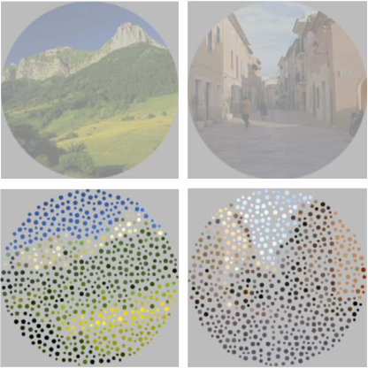
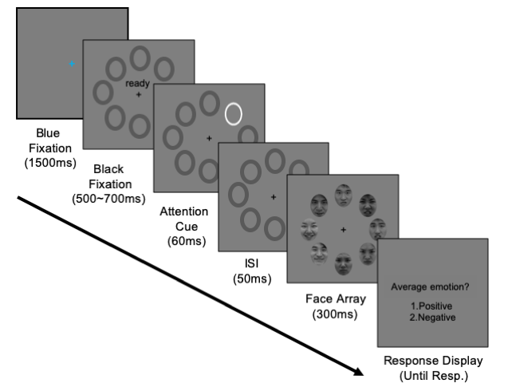

Ensemble perception
General direction
We have a surprisingly efficient cognitive ability to summarize redundant information of complex input into a succinct gist format. Our visual system easily extracts various summary statistics such as mean, variance, or shapes of distribution among stimuli. I’m studying how we use this ability to efficiently recognize a group of complex visual inputs, ranging from simple features (e.g., colored dots) to complex features (e.g., faces) in various visual settings.
Sub-projects

Novel procedure for generating continuous flash suppression: Seurat meets Mondrian
Continuous flash suppression (CFS) entails presentation of a stationary target to one eye and an animated sequence of arrays of geometric figures, the mask, to the other eye. The prototypical CFS sequence comprises different sized rectangles of various colors, dubbed Mondrians. Presented as a rapid, changing sequence to one eye, Mondrians or other similarly constructed textured arrays can abolish awareness of the target viewed by the other eye for many seconds at a time, producing target suppression durations much longer than those associated with conventional binocular rivalry. We have devised an animation technique that replaces meaningless Mondrian figures with recognizable visual objects and scenes as inducers of CFS, allowing explicit manipulation of the visual semantic content of those masks. By converting each image of these CFS sequences into successively presented objects or scenes each comprised of many small, circular patches of color, we create pointillist CFS sequences closely matched in terms of their spatio- temporal power spectra. Randomly rearranging the positions of the pointillist patches scrambles the images so they are no longer recognizable. CFS sequences comprising a stream of different objects produces more robust interocular suppression than do sequences comprising a stream of different scenes, even when the two categories of CFS are matched in root mean square contrast and spatial frequency content. Factors promoting these differences in CFS potency could range from low- level, image-based features to high-level factors including attention and recognizability. At the same time, object-
and scene-based CFS sequences, when themselves suppressed from awareness, do not differ in their durations of suppression, implying that semantic content of those images comprising CFS sequences are not registered during suppression. The pointillist technique itself offers a potentially useful means for examining the impact of high-level image meaning on aspects of visual perception other than interocular suppression.

Cultural differences in attentional cueing effects during facial ensemble perception
Face ensemble perception refers to a cognitive ability to extract an overall gist from a group of faces at a glance. This ability has been recently known to be modulated by a perceiver’s cultural background such that Easterners are better at ensemble processing than Westerners. The proposed mechanism of this cultural difference is the distinctive perceptual processing style between cultures; Easterners tend to distribute their attention globally while Westerners focus on a part locally. However, it remains unknown how this different perceptual style operates when the perceiver’s attention is attracted to local information during ensemble perception. To investigate this, we conducted two experiments where a local face is cued by an exogenous spatial cue when participants judge the overall mood of a group of faces. We hypothesized that Americans would be more strongly affected by a cued face than Koreans when extracting the overall mood of the group as their local processing style suits with focused attention well. We found that Americans were more strongly affected by attentional cues than Koreans while judging the overall mood of Korean faces. Moreover, the stronger cueing effect in Americans was consistently observed even when the race of face stimuli changed to more familiar Caucasian faces (Experiment 2). These results suggest that the distinct performance in ensemble perception shaped by different perceptual processing styles between cultures can be modulated by exogenous attentional cues. Also, this modulated ensemble performance cannot be solely explained by the observer’s social familiarity to the race of faces. This finding expands our understanding of how face ensemble perception operates in complex social settings where internal and external social factors interact.